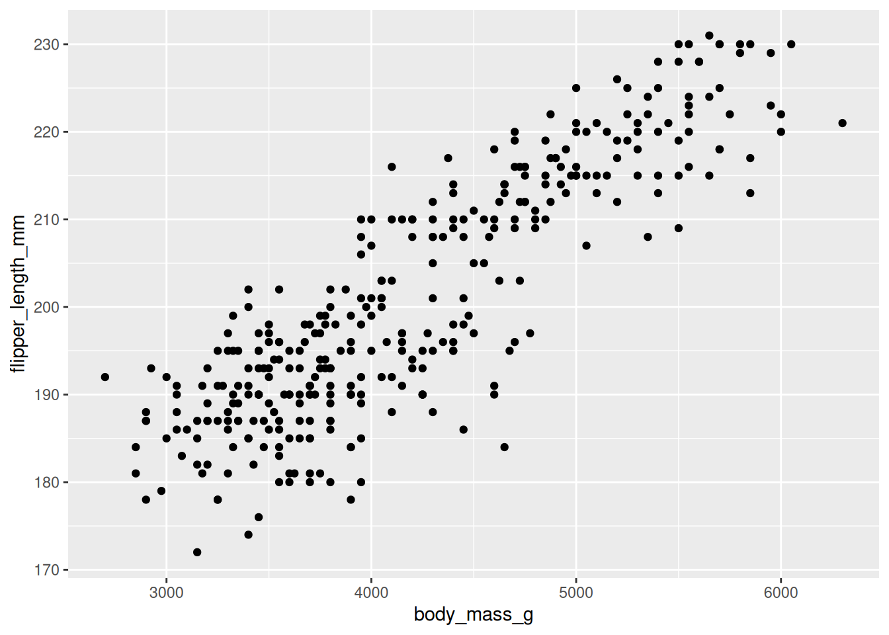
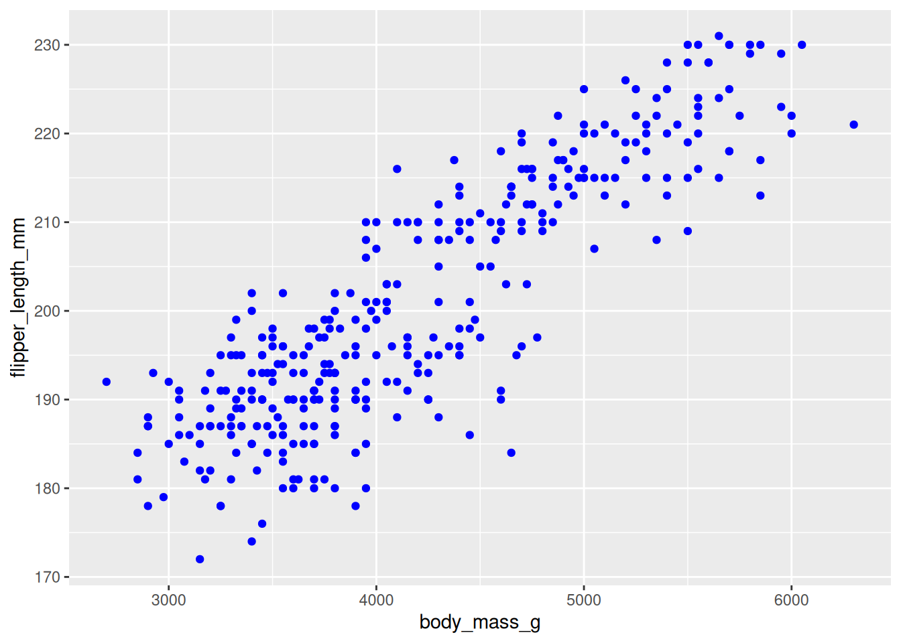
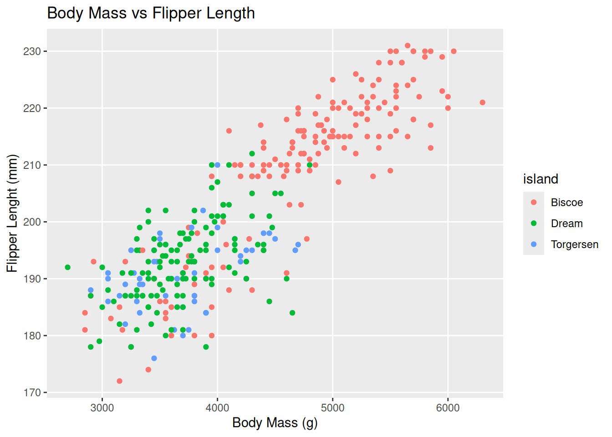
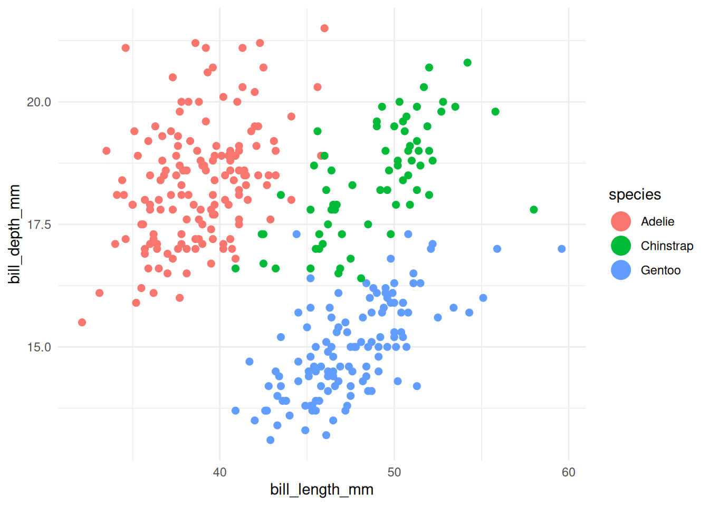
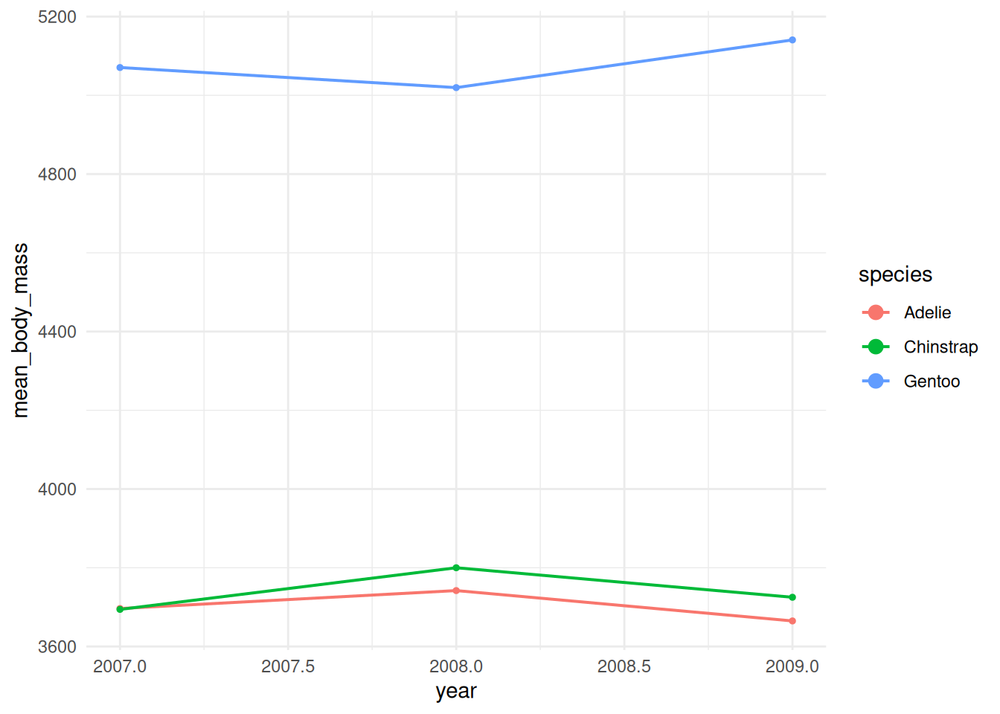
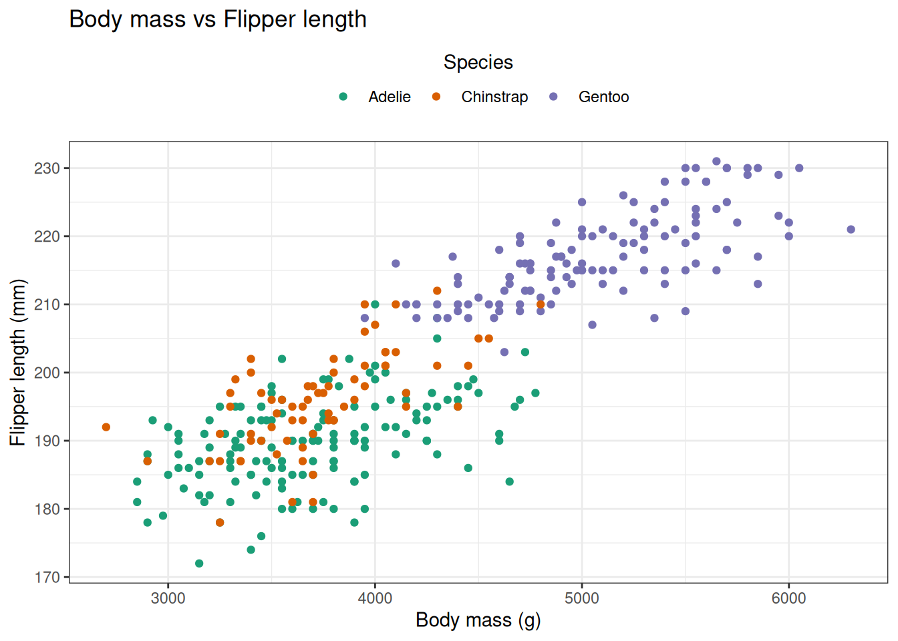

library(tidyverse)
library(palmerpenguins)
# brings 'penguins' dataset into name space
attach(penguins)
# brings 'penguins_raw' dataset into name space
attach(penguins_raw)Plot Customisation
Setup
The base plot we’ll use to look at customisations
penguin_plot <- ggplot(
data = penguins,
mapping = aes(x = body_mass_g,
y = flipper_length_mm,
colour = island)
)
penguin_plot <- penguin_plot +
geom_point()
penguin_plotWarning: Removed 2 rows containing missing values or values outside the scale range
(`geom_point()`).
Theming and Labels
labs()can be used to alter the labels such as title, subtitle, x, and y.theme()is used to alther elements of the theme
penguin_plot <- penguin_plot +
labs(x = "Body Mass (g)",
y = "Flipper Lenght (mm)",
title = "Body Mass vs Flipper Length")
penguin_plot +
theme(panel.grid.minor = element_blank())Warning: Removed 2 rows containing missing values or values outside the scale range
(`geom_point()`).
Or you can apply how pre-defined themes e.g. `theme_bw()
penguin_plot +
theme_bw()Warning: Removed 2 rows containing missing values or values outside the scale range
(`geom_point()`).
Customising Plots
Legend customisation
Often you will want to customise the colours used in the legend or the name of it
Many generator functions exist and these differ by the scale type, but for manual specification scale_<type>_manual is the generic function, where <type> corresponds to the property used in aes.
penguin_plot +
scale_colour_manual(name = "Island",
values = c(Biscoe = "purple", Dream = "brown", Torgersen = "yellow")
)Warning: Removed 2 rows containing missing values or values outside the scale range
(`geom_point()`).
ggplot(penguins, aes(x = body_mass_g, y = flipper_length_mm, colour = species)) +
geom_point() +
scale_colour_manual(
name = "Penguin species",
values = c(Adelie = "#1b9e77", Chinstrap = "#d95f02", Gentoo = "#7570b3"),
labels = c(Adelie = "Adelie (Aptenodytes)", Chinstrap = "Chinstrap (Pygoscelis)", Gentoo = "Gentoo (Pygoscelis)")
) +
guides(colour = guide_legend(title.position = "top", title.hjust = 0.5, nrow = 1)) +
theme(legend.position = "top")Warning: Removed 2 rows containing missing values or values outside the scale range
(`geom_point()`).
# increase point size in legend only (penguins)
ggplot(penguins, aes(x = bill_length_mm, y = bill_depth_mm, colour = species)) +
geom_point(size = 2, na.rm = TRUE) +
guides(colour = guide_legend(override.aes = list(size = 6))) +
theme_minimal()
# increase line thickness in legend only (penguins summarized by year)
df_line <- penguins %>%
filter(!is.na(species), !is.na(year), !is.na(body_mass_g)) %>%
group_by(species, year) %>%
summarise(mean_body_mass = mean(body_mass_g, na.rm = TRUE), .groups = "drop")
ggplot(df_line, aes(x = year, y = mean_body_mass, colour = species, group = species)) +
geom_line(linewidth = 0.7) +
geom_point(size = 1) +
guides(colour = guide_legend(override.aes = list(size = 3))) +
theme_minimal()
Exercises
Exercise 1 — Scatter plot & legend styling Task: Create a scatter plot of body_mass_g (x) vs flipper_length_mm (y), colour points by species, add a title and axis labels, apply theme_bw(), set a manual colour scale (use three hex colours), and move the legend to the top with a single-row layout. Success criteria: plot shows colored points by species, custom colours used, title & axis labels present, legend at top in one row. Hint / starter code:
library(tidyverse)
library(palmerpenguins)
ggplot(penguins, aes(x = body_mass_g, y = flipper_length_mm, colour = species)) +
geom_point(na.rm = TRUE) +
labs(title = "Body mass vs Flipper length", x = "Body mass (g)", y = "Flipper length (mm)") +
scale_colour_manual(values = c(Adelie = "#1b9e77", Chinstrap = "#d95f02", Gentoo = "#7570b3")) +
guides(colour = guide_legend(nrow = 1, title.position = "top", title.hjust = 0.5)) +
theme_bw() +
theme(legend.position = "top")Exercise 2 — Aggregation + line plot with legend overrides Task: Compute mean body mass per species per year, plot it as a line chart with points (one line per species), and make the legend show thicker lines than plotted in the panel (use guides override.aes). Success criteria: time series lines with points for each species, legend shows thicker line samples than panel lines. Hint / starter code:
df_line <- penguins %>%
filter(!is.na(species), !is.na(year), !is.na(body_mass_g)) %>%
group_by(species, year) %>%
summarise(mean_body_mass = mean(body_mass_g, na.rm = TRUE), .groups = "drop")
ggplot(df_line, aes(x = year, y = mean_body_mass, colour = species, group = species)) +
geom_line(linewidth = 0.6) +
geom_point(size = 1.5) +
guides(colour = guide_legend(override.aes = list(linewidth = 2, size = 4))) +
theme_minimal()Exercise 3 — Facets, handling missing values, and saving output Task: Make a scatter plot of bill_length_mm vs bill_depth_mm, colour by sex, facet by island, remove rows with missing bill measurements before plotting, set axis limits to focus on typical ranges, and save the plot to “plots/bill_scatter.png” at 300 dpi. Success criteria: facets by island created, missing rows removed, axis limits set, plot saved to disk. Hint / starter code:
dir.create("plots", showWarnings = FALSE)
penguins %>%
drop_na(bill_length_mm, bill_depth_mm, sex) %>%
ggplot(aes(x = bill_length_mm, y = bill_depth_mm, colour = sex)) +
geom_point(na.rm = TRUE) +
facet_wrap(~ island) +
xlim(30, 60) + ylim(10, 22) +
theme_classic() ->
p
ggsave("plots/bill_scatter.png", p, dpi = 300, width = 8, height = 5)Possible solutions
# -------------------------
# Possible solutions
# -------------------------
# Exercise 1 — Scatter plot & legend styling
library(ggplot2)
ex1_df <- penguins %>% drop_na(body_mass_g, flipper_length_mm, species)
ggplot(ex1_df, aes(x = body_mass_g, y = flipper_length_mm, colour = species)) +
geom_point(na.rm = TRUE) +
labs(
title = "Body mass vs Flipper length",
x = "Body mass (g)",
y = "Flipper length (mm)",
colour = "Species"
) +
scale_colour_manual(
values = c(Adelie = "#1b9e77", Chinstrap = "#d95f02", Gentoo = "#7570b3")
) +
guides(colour = guide_legend(nrow = 1, title.position = "top", title.hjust = 0.5)) +
theme_bw() +
theme(legend.position = "top")
# Exercise 2 — Aggregation + line plot with legend overrides
df_line <- penguins %>%
filter(!is.na(species), !is.na(year), !is.na(body_mass_g)) %>%
group_by(species, year) %>%
summarise(mean_body_mass = mean(body_mass_g, na.rm = TRUE), .groups = "drop")
ggplot(df_line, aes(x = year, y = mean_body_mass, colour = species, group = species)) +
geom_line(linewidth = 0.6, na.rm = TRUE) +
geom_point(size = 1.5, na.rm = TRUE) +
labs(title = "Mean body mass by species over years", x = "Year", y = "Mean body mass (g)") +
guides(colour = guide_legend(override.aes = list(linewidth = 2, size = 4))) +
theme_minimal()
# Exercise 3 — Facets, handling missing values, and saving output
dir.create("plots", showWarnings = FALSE)
ex3_df <- penguins %>% drop_na(bill_length_mm, bill_depth_mm, sex, island)
p <- ggplot(ex3_df, aes(x = bill_length_mm, y = bill_depth_mm, colour = sex)) +
geom_point(na.rm = TRUE) +
facet_wrap(~ island) +
labs(title = "Bill length vs Bill depth by island", x = "Bill length (mm)", y = "Bill depth (mm)") +
coord_cartesian(xlim = c(30, 60), ylim = c(10, 22)) + # focus on typical ranges without dropping data
theme_classic()
#ggsave("plots/bill_scatter.png", p, dpi = 300, width = 8, height = 5)